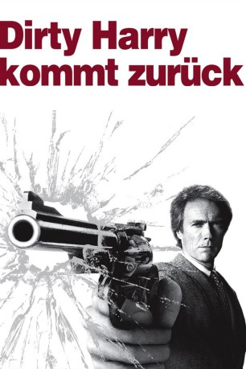

#1314 Dirty Harry 4 - Dirty Harry kommt zurück
Alternativ: Sudden Impact
 
 IMDB-Wertung: 6.6 / 10
IMDB-Wertung: 6.6 / 10  Metascore: 52
Metascore: 52 
Nachdem er einem Gangsterboss auf unorthodoxe Art und Weise von diesem ins nächste Leben geholfen hat, wird Harry Calahan wieder einmal suspendiert. Man schickt ihn jedoch bald in ein kleines Küstenstädtchen, indem es zu einer Mordserie gekommen ist. Harry macht vor Ort die Bekanntschaft der unnahbaren Jennifer Spencer, die für ihn bald schon Hauptverdächtige für die Morde ist, welche sich offenbar auf eine Vergewaltigung von vor einigen Jahren beziehen. Calahan ist hin- und hergerissen...
Jahr: 1983
Dauer: 117 Minuten
FSK: 18
Land: USA Studio: Warner Bros. A Warner Communications CompanyTonspuren:
Untertitel:
Auflösung: 1080p (1920x796) Größe: 3962 MB
Genre: Action, Krimi, Thriller
Regisseur:  Clint Eastwood
Clint Eastwood
Drehbuch: Harry Julian Fink, Rita M. Fink, Joseph Stinson, Earl E. Smith, Charles B. Pierce
Soundtrack: Lalo Schifrin
Darsteller:
 Clint Eastwood als Harry Callahan
Clint Eastwood als Harry Callahan Sondra Locke als Jennifer Spencer
Sondra Locke als Jennifer Spencer Pat Hingle als Chief Jannings
Pat Hingle als Chief Jannings Bradford Dillman als Captain Briggs
Bradford Dillman als Captain Briggs Kevyn Major Howard als Hawkins
Kevyn Major Howard als Hawkins- Bette Ford als Leah
- Wendell Wellman als Tyrone
 Nancy Fish als Historical Society Woman
Nancy Fish als Historical Society Woman Carmen Argenziano als D'Ambrosia
Carmen Argenziano als D'Ambrosia- Mike Johnson als Assassin
 Nick Dimitri als Assassin
Nick Dimitri als Assassin Jophery C. Brown als Young Guy
Jophery C. Brown als Young Guy James McEachin als Detective Barnes
James McEachin als Detective Barnes- Lisa London als Young Hooker
 Michael V. Gazzo als Threlkis , uncredited
Michael V. Gazzo als Threlkis , uncredited Conrad Hurtt als Police Officer , uncredited
Conrad Hurtt als Police Officer , uncredited Camryn Manheim als Girl in Elevator , uncredited
Camryn Manheim als Girl in Elevator , uncredited Dihlon McManne als Cop , uncredited
Dihlon McManne als Cop , uncredited- Paul Drake als Mick
 Audrie Neenan als Ray Parkins
Audrie Neenan als Ray Parkins- Jack Thibeau als Kruger
- Michael Currie als Lt. Donnelly
 Albert Popwell als Horace King
Albert Popwell als Horace King- Mark Keyloun als Officer Bennett
- Nancy Parsons als Mrs. Kruger
- Joe Bellan als Burly Detective
 Mara Corday als Loretta - Coffee Shop Waitress
Mara Corday als Loretta - Coffee Shop Waitress- Russ McCubbin als Eddie
- Robert Sutton als Carl
- Lisa Britt als Elizabeth
- Bill Reddick als Police Commissioner
- Lois De Banzie als Judge
- Matthew Child als Alby
- Michael Maurer als George Wilburn
- Pat DuVal als Bailiff
- Christian Phillips als Hawkin's Crony
- Steven Kravitz als Hawkin's Crony
- Dennis Royston als Young Guy
- Melvin Thompson als Young Guy
- William Upton als Young Guy
 Lloyd Nelson als Desk Sergeant
Lloyd Nelson als Desk Sergeant- Christopher Pray als Detective Jacobs
- Maria Lynch als Hostess
- Ken Lee als Loomis
- Morgan Upton als Bartender
- John X. Heart als Uniform Policeman
- David Gonzales als Gang Member
- Albert Martinez als Gang Member
- David Rivers als Gang Member
- Robert Rivers als Gang Member
Datei: X:\5-Pentalogie(A-Z)\Dirty Harry\Dirty Harry 4 - Dirty Harry kommt zurück (1983, FSK18, 1920x796).mkv seit 19.06.2015
Festplatte: HD Collection-3(N-Z)-6(A-Z)
 Es gibt insgesamt 8 Filme in der Gruppe '5-Pentalogie(A-Z)\Dirty Harry'
Es gibt insgesamt 8 Filme in der Gruppe '5-Pentalogie(A-Z)\Dirty Harry'